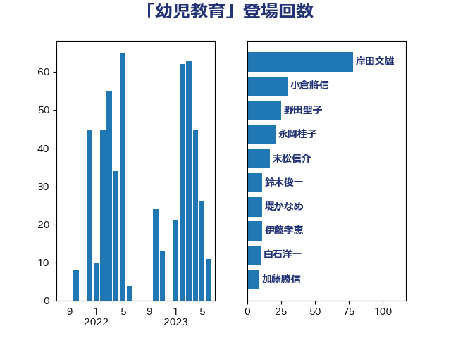

単語「幼児教育」

| 坂本哲志 | 自由民主党 | 67 回 |
| 岸田文雄 | 自由民主党 | 35 回 |
| 古屋範子 | 公明党 | 26 回 |
| 野田聖子 | 自由民主党 | 25 回 |
| 萩生田光一 | 自由民主党 | 21 回 |
| 末松信介 | 自由民主党 | 17 回 |
| 菅義偉 | 自由民主党 | 13 回 |
| 堤かなめ | 立憲民主党 | 10 回 |
| 鈴木俊一 | 自由民主党 | 10 回 |
| 麻生太郎 | 自由民主党 | 9 回 |
| 池田佳隆 | 自由民主党 | 8 回 |
| 山際大志郎 | 自由民主党 | 7 回 |
| 松川るい | 自由民主党 | 7 回 |
| 高木かおり | 日本維新の会 | 7 回 |
| 岡本あき子 | 立憲民主党 | 6 回 |
| 自見はなこ | 自由民主党 | 6 回 |
| 上野通子 | 自由民主党 | 5 回 |
| 塩村あやか | 立憲民主党 | 5 回 |
| 大西健介 | 立憲民主党 | 5 回 |
| 山口那津男 | 公明党 | 5 回 |
| 後藤茂之 | 自由民主党 | 5 回 |
| 藤田文武 | 日本維新の会 | 5 回 |
| 西村康稔 | 自由民主党 | 5 回 |
| 中野洋昌 | 公明党 | 4 回 |
| 塩川鉄也 | 日本共産党 | 4 回 |
| 田村智子 | 日本共産党 | 4 回 |
| 石井啓一 | 公明党 | 4 回 |
| 中川正春 | 立憲民主党 | 3 回 |
| 今枝宗一郎 | 自由民主党 | 3 回 |
| 城井崇 | 立憲民主党 | 3 回 |
| 山谷えり子 | 自由民主党 | 3 回 |
| 平木大作 | 公明党 | 3 回 |
| 有村治子 | 自由民主党 | 3 回 |
| 稲津久 | 公明党 | 3 回 |
| 藤原崇 | 自由民主党 | 3 回 |
| 逢坂誠二 | 立憲民主党 | 3 回 |
| 佐々木さやか | 公明党 | 2 回 |
| 加藤勝信 | 自由民主党 | 2 回 |
| 務台俊介 | 自由民主党 | 2 回 |
| 吉川元 | 立憲民主党 | 2 回 |
| 吉川沙織 | 立憲民主党 | 2 回 |
| 吉川赳 | 無所属 | 2 回 |
| 吉良州司 | 無所属 | 2 回 |
| 和田政宗 | 自由民主党 | 2 回 |
| 太田房江 | 自由民主党 | 2 回 |
| 宮路拓馬 | 自由民主党 | 2 回 |
| 岸真紀子 | 立憲民主党 | 2 回 |
| 木原稔 | 自由民主党 | 2 回 |
| 杉尾秀哉 | 立憲民主党 | 2 回 |
| 櫛渕万里 | れいわ新選組 | 2 回 |
| 浜口誠 | 国民民主党 | 2 回 |
| 田村憲久 | 自由民主党 | 2 回 |
| 竹内譲 | 公明党 | 2 回 |
| 赤池誠章 | 自由民主党 | 2 回 |
| 輿水恵一 | 公明党 | 2 回 |
| 道下大樹 | 立憲民主党 | 2 回 |
| 野上浩太郎 | 自由民主党 | 2 回 |
| 青山周平 | 自由民主党 | 2 回 |
| 高野光二郎 | 自由民主党 | 2 回 |
| こやり隆史 | 自由民主党 | 1 回 |
| 三ッ林裕巳 | 自由民主党 | 1 回 |
| 三浦信祐 | 公明党 | 1 回 |
| 下村博文 | 自由民主党 | 1 回 |
| 中谷一馬 | 立憲民主党 | 1 回 |
| 伊佐進一 | 公明党 | 1 回 |
| 伊藤渉 | 公明党 | 1 回 |
| 伴野豊 | 立憲民主党 | 1 回 |
| 佐藤英道 | 公明党 | 1 回 |
| 倉林明子 | 日本共産党 | 1 回 |
| 古賀篤 | 自由民主党 | 1 回 |
| 吉田久美子 | 公明党 | 1 回 |
| 和田義明 | 自由民主党 | 1 回 |
| 堀井巌 | 自由民主党 | 1 回 |
| 安江伸夫 | 公明党 | 1 回 |
| 小沼巧 | 立憲民主党 | 1 回 |
| 小野泰輔 | 日本維新の会 | 1 回 |
| 島尻安伊子 | 自由民主党 | 1 回 |
| 平林晃 | 公明党 | 1 回 |
| 掘井健智 | 日本維新の会 | 1 回 |
| 杉久武 | 公明党 | 1 回 |
| 松山政司 | 自由民主党 | 1 回 |
| 柳ヶ瀬裕文 | 日本維新の会 | 1 回 |
| 柴山昌彦 | 自由民主党 | 1 回 |
| 梅村みずほ | 日本維新の会 | 1 回 |
| 森山浩行 | 立憲民主党 | 1 回 |
| 河西宏一 | 公明党 | 1 回 |
| 泉健太 | 立憲民主党 | 1 回 |
| 浮島智子 | 公明党 | 1 回 |
| 源馬謙太郎 | 立憲民主党 | 1 回 |
| 熊谷裕人 | 立憲民主党 | 1 回 |
| 片山大介 | 日本維新の会 | 1 回 |
| 牧義夫 | 立憲民主党 | 1 回 |
| 石田昌宏 | 自由民主党 | 1 回 |
| 舞立昇治 | 自由民主党 | 1 回 |
| 若松謙維 | 公明党 | 1 回 |
| 西村智奈美 | 立憲民主党 | 1 回 |
| 角田秀穂 | 公明党 | 1 回 |
| 谷田川元 | 立憲民主党 | 1 回 |
| 里見隆治 | 公明党 | 1 回 |
| 阿部司 | 日本維新の会 | 1 回 |
| 青木愛 | 立憲民主党 | 1 回 |
| 音喜多駿 | 日本維新の会 | 1 回 |